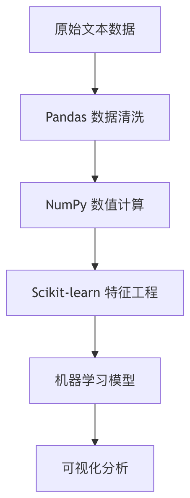

データ処理ツール
自然言語処理（NLP）は人工知能の重要な一分野であり、データ処理はNLPプロジェクト成功の鍵です。
本記事では、NLPデータ処理の全フローに必要なツールセットを体系的に紹介し、データクリーニング、数値計算、特徴エンジニアリング、機械学習、可視化などの主要な要素を網羅します。

Pandas：データクリーニングと前処理
Pandas コアデータ構造
PandasはNLPデータ処理の基盤となる2つの主要なデータ構造を提供しています：
| データ構造 | 特徴 | NLP適用シナリオ |
|---|---|---|
| Series | 1次元ラベル付き配列 | 単一のテキスト特徴列を格納 |
| DataFrame | 2次元テーブル構造 | テキストデータセット全体を格納 |
よく使うテキスト処理操作
例
import pandas as pd
# サンプルデータを作成
data = {'text': ['Hello World!', 'NLP is amazing', 'Python 3.8'],
'label': [1, 0, 1]}
df = pd.DataFrame(data)
# 1. テキストクリーニング
df['clean_text'] = df['text'].str.lower() # 小文字に変換
df['clean_text'] = df['clean_text'].str.replace('[^\w\s]', '') # 句読点を削除
# 2. トークン化処理
df['tokens'] = df['clean_text'].str.split() # スペースで分割
# 3. 語頻度統計
word_counts = df['tokens'].explode().value_counts()
print(word_counts)
# サンプルデータを作成
data = {'text': ['Hello World!', 'NLP is amazing', 'Python 3.8'],
'label': [1, 0, 1]}
df = pd.DataFrame(data)
# 1. テキストクリーニング
df['clean_text'] = df['text'].str.lower() # 小文字に変換
df['clean_text'] = df['clean_text'].str.replace('[^\w\s]', '') # 句読点を削除
# 2. トークン化処理
df['tokens'] = df['clean_text'].str.split() # スペースで分割
# 3. 語頻度統計
word_counts = df['tokens'].explode().value_counts()
print(word_counts)
高度なテキスト処理テクニック
- 正規表現フィルタリング：
df['text'].str.contains(r'\bNLP\b') - ストップワード除去：NLTKまたはspaCyライブラリと組み合わせる
- 欠損値処理：
df.dropna()或df.fillna('UNK')
NumPy：効率的な数値計算
コア機能
NumPyはNLPに効率的な数値計算能力を提供します：
- 多次元配列：単語ベクトル、埋め込み行列を格納
- ブロードキャスト機構：要素単位の演算を効率的に実行
- 線形代数：行列分解、類似度計算
典型的な応用例
例
import numpy as np
# 単語ベクトル行列を作成（3単語、各5次元）
word_vectors = np.array([
[0.1, 0.2, 0.3, 0.4, 0.5], # 単語1
[0.6, 0.7, 0.8, 0.9, 1.0], # 単語2
[1.1, 1.2, 1.3, 1.4, 1.5] # 単語3
])
# コサイン類似度を計算
def cosine_similarity(a, b):
return np.dot(a, b) / (np.linalg.norm(a) * (np.linalg.norm(b))
# 最初の2つの単語の類似度を計算
sim = cosine_similarity(word_vectors[0], word_vectors[1])
print(f"類似度: {sim:.2f}")
# 単語ベクトル行列を作成（3単語、各5次元）
word_vectors = np.array([
[0.1, 0.2, 0.3, 0.4, 0.5], # 単語1
[0.6, 0.7, 0.8, 0.9, 1.0], # 単語2
[1.1, 1.2, 1.3, 1.4, 1.5] # 単語3
])
# コサイン類似度を計算
def cosine_similarity(a, b):
return np.dot(a, b) / (np.linalg.norm(a) * (np.linalg.norm(b))
# 最初の2つの単語の類似度を計算
sim = cosine_similarity(word_vectors[0], word_vectors[1])
print(f"類似度: {sim:.2f}")
パフォーマンス最適化テクニック
- 使用
np.vectorizePythonループを置き換える - 利用
np.save/np.load大規模行列を効率的に格納 - 習得
np.einsum複雑なテンソル演算を実行
Scikit-learn：機械学習パイプライン
NLP特徴抽出
例
from sklearn.feature_extraction.text import TfidfVectorizer
corpus = [
'This is the first document.',
'This document is the second document.',
'And this is the third one.'
]
# TF-IDFベクトライザを作成
vectorizer = TfidfVectorizer()
X = vectorizer.fit_transform(corpus)
print(f"特徴行列の形状: {X.shape}")
print(f"特徴語彙: {vectorizer.get_feature_names_out()}")
corpus = [
'This is the first document.',
'This document is the second document.',
'And this is the third one.'
]
# TF-IDFベクトライザを作成
vectorizer = TfidfVectorizer()
X = vectorizer.fit_transform(corpus)
print(f"特徴行列の形状: {X.shape}")
print(f"特徴語彙: {vectorizer.get_feature_names_out()}")
完全なNLPパイプラインの例
例
from sklearn.pipeline import Pipeline
from sklearn.ensemble import RandomForestClassifier
from sklearn.model_selection import train_test_split
# パイプラインを作成
nlp_pipeline = Pipeline([
('tfidf', TfidfVectorizer(max_features=1000)),
('clf', RandomForestClassifier(n_estimators=100))
])
# サンプルデータの準備
texts = ["good movie", "bad film", "great story"] * 100
labels = [1, 0, 1] * 100
# トレーニング/テスト分割
X_train, X_test, y_train, y_test = train_test_split(texts, labels)
# モデルのトレーニング
nlp_pipeline.fit(X_train, y_train)
# 評価
print(f"テスト精度: {nlp_pipeline.score(X_test, y_test):.2f}")
from sklearn.ensemble import RandomForestClassifier
from sklearn.model_selection import train_test_split
# パイプラインを作成
nlp_pipeline = Pipeline([
('tfidf', TfidfVectorizer(max_features=1000)),
('clf', RandomForestClassifier(n_estimators=100))
])
# サンプルデータの準備
texts = ["good movie", "bad film", "great story"] * 100
labels = [1, 0, 1] * 100
# トレーニング/テスト分割
X_train, X_test, y_train, y_test = train_test_split(texts, labels)
# モデルのトレーニング
nlp_pipeline.fit(X_train, y_train)
# 評価
print(f"テスト精度: {nlp_pipeline.score(X_test, y_test):.2f}")
よく使うNLPコンポーネント
| コンポーネントカテゴリ | 主要クラス | 機能説明 |
|---|---|---|
| 特徴抽出 | CountVectorizer | バッグ・オブ・ワードモデル |
| TfidfVectorizer | TF-IDF重み付け | |
| テキスト前処理 | HashingVectorizer | メモリに優しい特徴抽出 |
| 次元削減 | TruncatedSVD | 潜在意味分析 |
可視化ツール
Matplotlib 基本可視化
例
import matplotlib.pyplot as plt
# 語頻度可視化の例
words = ['nlp', 'python', 'learning']
frequencies = [25, 40, 35]
plt.figure(figsize=(8, 4))
plt.bar(words, frequencies, color=['#3498db', '#2E7DCC', '#e74c3c'])
plt.title('NLP用語の頻度分布')
plt.xlabel('用語')
plt.ylabel('出現回数')
plt.show()
# 語頻度可視化の例
words = ['nlp', 'python', 'learning']
frequencies = [25, 40, 35]
plt.figure(figsize=(8, 4))
plt.bar(words, frequencies, color=['#3498db', '#2E7DCC', '#e74c3c'])
plt.title('NLP用語の頻度分布')
plt.xlabel('用語')
plt.ylabel('出現回数')
plt.show()
高度な可視化ライブラリ
Seaborn：統計グラフがより簡単
例
import seaborn as sns
sns.heatmap(tfidf_matrix, annot=True)
sns.heatmap(tfidf_matrix, annot=True)
WordCloud：ワードクラウドを生成
例
from wordcloud import WordCloud
wordcloud = WordCloud().generate(' '.join(texts))
plt.imshow(wordcloud)
wordcloud = WordCloud().generate(' '.join(texts))
plt.imshow(wordcloud)
Plotly：インタラクティブな可視化
例
import plotly.express as px
fig = px.scatter_3d(embeddings, x=0, y=1, z=2)
fig.show()
fig = px.scatter_3d(embeddings, x=0, y=1, z=2)
fig.show()
総合実践プロジェクト
感情分析の完全なフロー
例
# 1. データの読み込み
df = pd.read_csv('reviews.csv')
# 2. データクリーニング
df['clean_text'] = df['text'].str.lower().str.replace('[^\w\s]', '')
# 3. 特徴エンジニアリング
vectorizer = TfidfVectorizer(max_features=5000)
X = vectorizer.fit_transform(df['clean_text'])
y = df['sentiment']
# 4. モデルのトレーニング
from sklearn.svm import LinearSVC
model = LinearSVC()
model.fit(X, y)
# 5. 可視化
import seaborn as sns
from sklearn.metrics import confusion_matrix
y_pred = model.predict(X)
cm = confusion_matrix(y, y_pred)
sns.heatmap(cm, annot=True, fmt='d')
df = pd.read_csv('reviews.csv')
# 2. データクリーニング
df['clean_text'] = df['text'].str.lower().str.replace('[^\w\s]', '')
# 3. 特徴エンジニアリング
vectorizer = TfidfVectorizer(max_features=5000)
X = vectorizer.fit_transform(df['clean_text'])
y = df['sentiment']
# 4. モデルのトレーニング
from sklearn.svm import LinearSVC
model = LinearSVC()
model.fit(X, y)
# 5. 可視化
import seaborn as sns
from sklearn.metrics import confusion_matrix
y_pred = model.predict(X)
cm = confusion_matrix(y, y_pred)
sns.heatmap(cm, annot=True, fmt='d')
パフォーマンス最適化テクニック
- 並列処理：使用
n_jobsパラメータ - 特徴選択：
SelectKBest次元を削減 - パイプラインキャッシュ：
memoryパラメータで中間結果をキャッシュ
ツールチェーン拡張の推奨
- NLTK：定番NLPツールキット
- spaCy：産業グレードのNLP処理
- Gensim：トピックモデリングと単語ベクトル
- HuggingFace Transformers：事前学習済みモデル
これらのツールの組み合わせ使用を習得することで、ほとんどのNLPデータ処理タスクを効率的に処理でき、より高度なNLPアプリケーションのための強固な基盤を築くことができます。
その他の拡張